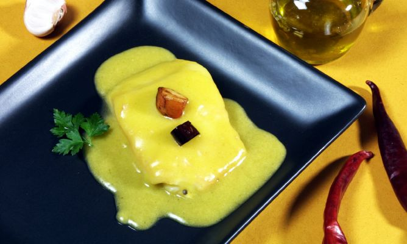
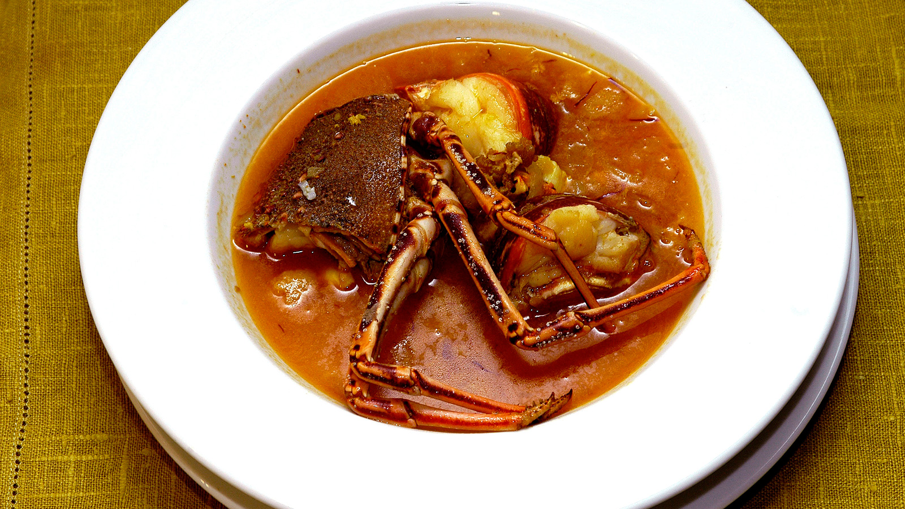
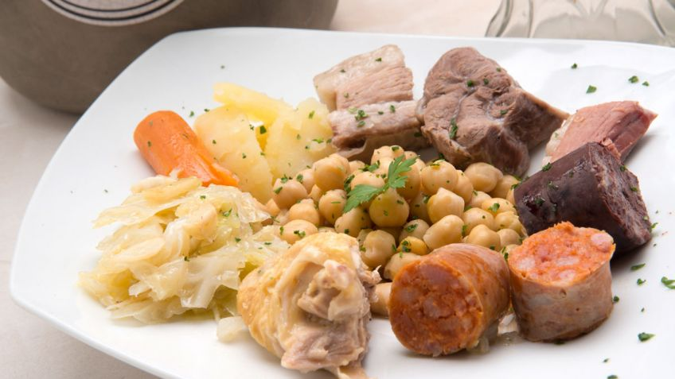

Hola bienvenidos al menu de platillos de España.
Platillo |
Imagen |
Informacion |
| 1-Bacalao al pil pil. |
 |
Es un plato en el cual el bacalao se cocina en aceite de oliva y ajos hasta que tome consistencia. Generalmente se sirve en platos de barro o arcilla. |
|
2-Caldereta de langosta.
|  |
Es un caldo de langosta. La langosta se pone trozada sobre un sofrito que contiene cebolla, ajo, tomate y perejil y se cocina a fuego alto. Se sirve con unas rebanadas delgadas de pan seco, típico de la región de Menorca. |
|
3-Cocido madrileño.
|
 |
Es un tradicional guiso que esta compuesto principalmente por garbanzos con verduras, carne y cerdo (tocino). |